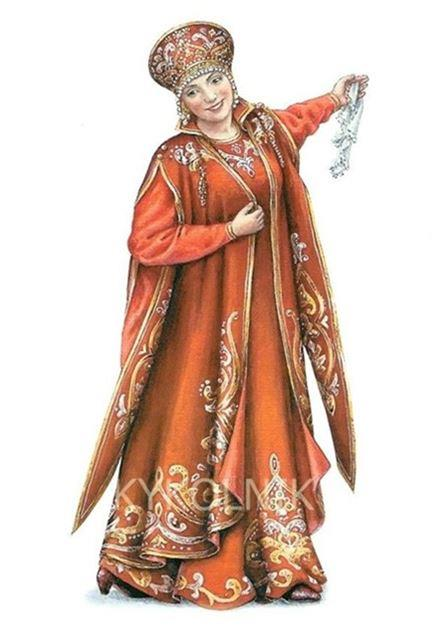
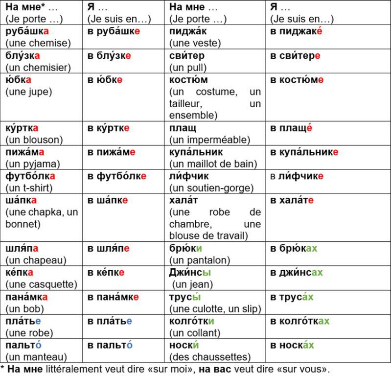
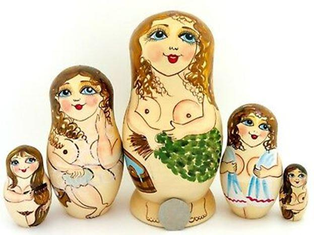
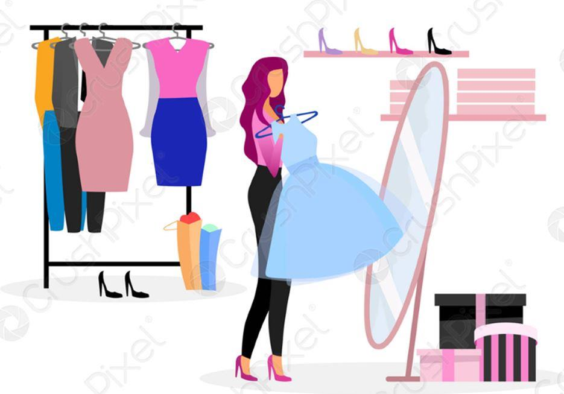
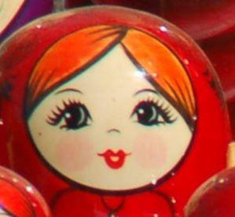

Здра́вствуйте, дороги́е друзья́! (Bonjour, chers amis !) Сего́дня мы поговори́м об оде́жде (Aujourd’hui nous allons parler des vêtements). Pour dire « les vêtements » en russe on utilise le mot au singulier ОДЕ́ЖДА. Кака́я на вас* сейча́с оде́жда? (Là, tout de suite, quels vêtements portez-vous ?)
Мо́жет быть, на вас футбо́лка и джи́нсы? (Peut-être, portez-vous un t-shirt et un jean ?) И́ли краси́вое ле́тнее пла́тье? (Ou une belle robe d’été ?) Наприме́р, на мне сего́дня пла́тье. (Moi, par exemple, je porte une robe aujourd’hui). Я в пла́тье. (Je suis en robe.) Моя́ дочь Ка́тя в ю́бке и блу́зке (Ma fille Katia est en jupe et en chemisier). На ней ю́бка и блу́зка (Elle porte une jupe et un chemisier). А мой муж в футбо́лке и в джи́нсах. (Et mon mari est en t-shirt et en jean.)
На нём футбо́лка и джи́нсы (Il porte un t-shirt et un jean.) А кака́я на вас сего́дня оде́жда? (Et quels vêtements portez-vous aujourd’hui ?) Répondez à l’aide de ce tableau.
Si actuellement vous ne portez pas de vêtements, vous pouvez dire Я го́лый (Je suis nu) ou Я го́лая (Je suis nue).
Кака́я на вас обы́чно оде́жда у́тром, днём, ве́чером и но́чью? (Quels vêtements portez-vous habituellement le matin, dans la journée, le soir et la nuit ?)
Наприме́р (par exemple): Днём и ве́чером на мне обы́чно пла́тье. (Dans la journée et le soir, d’habitude je porte une robe.) У́тром я в хала́те (Le matin je suis en robe de chambre), а но́чью на мне ночна́я руба́шка (et la nuit je porte une chemise de nuit).
В како́й оде́жде вы спи́те, рабо́таете, хо́дите в теа́тр? (Dans quelle tenue vous dormez, vous travaillez et vous sortez au théâtre ?) Наприме́р (par exemple): Я сплю в пижа́ме (Je dors en pyjama). Я рабо́таю в руба́шке, брю́ках и пиджаке́ (Je travaille en chemise, en pantalon et en veste). Я хожу́ в теа́тр в пла́тье (Je sors au théâtre en robe).
Quand on parle des vêtements, il ne faut pas oublier les chaussures (О́БУВЬ), les accessoires (АКСЕССУА́РЫ) et les bijoux (УКРАШЕ́НИЯ).
О́бувь – э́то (Les chaussures sont) ту́фли (des souliers), санда́лии (des sandales), сапоги́ (des bottes), кроссо́вки (des basquets), те́нниски (des tennis), босоно́жки (des nu-pieds), шлёпанцы (des tongs), та́пки (des chaussons ou pantoufles) и так да́лее (etc). Аксессуа́ры – э́то (Les accessoires sont) реме́нь и́ли по́яс (une ceinture), су́мка (un sac), зако́лка (une barrette), рези́нка (un chouchou), часы́ (une montre), очки́ (des lunettes), зо́нтик (un parapluie), шарф (une écharpe), плато́к (un foulard), перча́тки (des gants) и т.д. (etc) Украше́ния (Les bijoux sont) – кольцо́ / ко́льца (une bague / des bagues), се́рьги (des boucles d’oreilles), брасле́т / брасле́ты (un bracelet / des bracelets), бу́сы (un collier / des colliers), цепо́чка (une chaîne), брошь (une broche) и т.д. (etc)
Кака́я на вас сего́дня о́бувь? (Quelles chaussures portez-vous aujourd’hui ?) Наприме́р (par exemple) : На мне сейча́с босоно́жки (Là, tout de suite, je porte des nu-pieds). Кака́я о́бувь на вас до́ма (Quelles chaussures portez-vous à la maison), на у́лице (dans la rue), на рабо́те (au travail), на пля́же (à la plage), в па́рке (au parc), на стадио́не (au stade)? Наприме́р (par exemple) : До́ма я в та́пках (A la maison je suis en chaussons), на у́лице и на рабо́те я в ту́флях (dans la rue et au travail je suis en souliers), на пля́же я в шлёпанцах (à la plage je suis en tongs), в па́рке и на стадио́не я в кроссо́вках (au parc et au stade je suis en baskets).
Каки́е на вас сего́дня украше́ния? (Quels bijoux portez-vous aujourd’hui ?) Наприме́р (par exemple) : На мне се́рьги, кольцо́ и цепо́чка. (Je porte des boucles d’oreilles, une bague et une chaîne). Vous pouvez aussi répondre : На мне нет украше́ний (Je n’ai pas de bijoux sur moi).
Каки́е у вас сейча́с аксессуа́ры? (Là, tout de suite, quels accessoires avez-vous ?) Наприме́р (par exemple) : У меня́ су́мка, зако́лка, очки́ и зо́нтик (J’ai un sac, une barrette, des lunettes et un parapluie).
Maintenant nous pouvons aller dans une boutique des vêtements (МАГАЗИ́Н ОДЕ́ЖДЫ).
A propos, savez-vous quels sont les mots les plus importants à comprendre dans un magasin ? Ce sont А́КЦИЯ (promotion) et РАСПРОДА́ЖА (les soldes).
Si vous voulez poser une question au vendeur, commencez par Извини́те (Excusez-moi) ou Скажи́те, пожа́луйста (Dites-moi s’il vous plaît). Наприме́р (par exemple) : Извини́те, ско́лько э́то сто́ит? (Excusez-moi, combien ça coûte ?) Скажи́те, пожа́луйста, како́й э́то разме́р? (Dites-moi s’il vous plaît quelle taille est-ce ?) У вас есть бо́льший разме́р? (Avez-vous une taille au-dessus ?) У вас есть ме́ньший разме́р? (Avez-vous une taille au-dessous ?)

COMPRENEZ-VOUS LES DIALOGUES SUIVANTS ?
1
- Здра́вствуйте, у вас есть чёрные джи́нсы ?
- Да, вот, пожа́луйста.
- Извини́те, како́й э́то разме́р ?
- 44 (Со́рок четвёртый).
- У вас есть со́рок восьмо́й разме́р?
- Да, вот здесь.
- Спаси́бо !
- Пожа́луйста!
2
- Скажи́те, пожа́луйста, ско́лько э́то сто́ит ?
- 655 ₽ (Шестьсо́т пятьдеся́т пять).
- У вас есть ме́ньший разме́р?
- Извини́те, нет.
- Жаль (dommage), спаси́бо !
- Не́ за что!
En ce qui concerne les tailles des vêtements, il faut faire attention, car pour choisir les vêtements russes de bonne taille, ajoutez le chiffre 6 à votre taille habituelle française. Par exemple, si vous faites du 40 en France, ça va correspondre au 46 en Russie. Dans tous les cas, il vaut mieux essayer (приме́рить) avant d’acheter. Les questions suivantes peuvent vous aider : Извини́те, мо́жно приме́рить ? (Excusez-moi, je peux essayer ?) Скажи́те, пожа́луйста, где приме́рочная? (Dites-moi s’il vous plaît où est la cabine d’essayage ?)
Si les vêtements vous vont bien les Russes peuvent vous dire : Вам э́то о́чень идёт ! (Ça vous va bien !) ou Тебе́ э́то о́чень идёт ! (Ça te va bien !)
COMPRENEZ-VOUS LES DIALOGUES SUIVANTS ?
1
- Скажи́те, пожа́луйста, у вас есть кра́сные босоно́жки ?
- Да, вот, пожа́луйста.
- Мо́жно приме́рить ?
- Да, коне́чно (Oui, bien sûr).
- Извини́те, вас есть бо́льший разме́р?
- К сожале́нию, нет (Malheureusement, non).
- Жаль, спаси́бо !
- Пожа́луйста!
2
- Скажи́те, пожа́луйста, где приме́рочная ?
- Здесь.
- Спаси́бо!
- Вам э́то о́чень идёт.
- Спаси́бо. Ско́лько э́то сто́ит?
- 899 ₽ (Восемьсо́т девяно́сто де́вять). У нас распрода́жа.
ОТВЕ́ТЬТЕ НА ВОПРО́СЫ (RÉPONDEZ AUX QUESTIONS)
1. Кака́я у вас есть оде́жда? (Quels vêtements avez-vous ?) А кака́я о́бувь? (Et quelles chaussures ?) А каки́е у вас есть украше́ния и аксессуа́ры? (Et quels bijoux et accessoires avez-vous ?) Commencez par : У меня́ есть.... (J’ai…) Наприме́р (par exemple) : У меня́ есть пла́тье, блу́зка, брю́ки, ту́фли, сви́тер, бу́сы, ко́льца, се́рьги, брасле́ты...
2. Révisez la leçon précédente et dites de quelle couleur sont vos vêtements et chaussures : Како́го цве́та ва́ша оде́жда и о́бувь ? Par exemple : У меня́ есть си́нее пла́тье, бе́лая блу́зка, чёрные брю́ки, чёрные ту́фли, бе́лый сви́тер...
3. A votre avis, de quel mot français vient le mot russe КУ́РТКА (un blouson) et pourquoi ?
4. Dans la langue russe il existe un proverbe : «Не оде́жда кра́сит челове́ка, а его́ до́брые дела́». (Ce ne sont pas les vêtements qui embellissent une personne, mais ses bonnes actions.) Etes-vous d’accord avec ce proverbe ? Existe-t-il son équivalent en français ?
5. Connaissez-vous les vêtements et chaussures traditionnels russes comme сарафа́н, коко́шник, ла́пти, ва́ленки ? Sinon, trouvez les images et descriptifs sur Internet.
Et pour finir, voici deux virelangues sur le thème de vêtements. Répétez-les plusieurs fois au plus vite possible.
У Кондра́та ку́ртка короткова́та.
(Kondrate a un blouson un peu court.)
Шёлковая шаль, шерстяно́й шарф.
(Un châle en soie, une écharpe en laine.)
Écoutez le podcast de cette leçon, retrouvez les corrigés des exercices et entraînez-vous en faisant des jeux et exercices interactifs sur notre site le-russe.fr dans la rubrique « Cours de russe / Méthode ». До встре́чи, Ю́лия. (À bientôt, Julia.)
Partager cette page